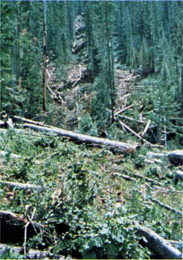
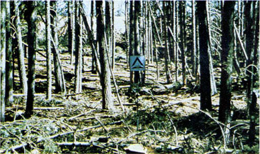
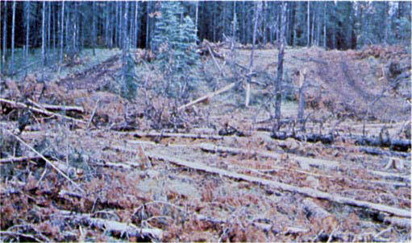

Fires are fairly active in the slash and herbaceous material intermixed with the slash. The spacing of the rather light fuel load, shading from overstory, or the aging of the fine fuels can contribute to limiting the fire potential. Light partial cuts or thinning operations in mixed conifer stands, hardwood stands, and southern pine harvests are considered. Clearcut operations generally produce more slash than represented here. The less-than-3-inch (7.6-cm) material load is less than 12 tons per acre (5.4 t/ha). The greater-than-3-inch (7.6-cm) is represented by not more than 10 pieces, 4 inches (10.2 cm) in diameter, along a 50-foot (15-m) transect. Field examples are shown in photographs 31, 32, and 33.

Photo 31. Slash residues left after skyline logging in western Montana.

Photo 32. Mixed conifer partial cut slash residues may be similar to
closed timber with down woody fuels.

Photo 33. Light logging residues with patchy distribution seldom can
develop high intensities.